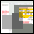

TraceNoizer generiert Klone von Ihrem Datenkörper, um diese zu disinformieren, die Ihnen nachspionieren!
TraceNoizer ist ein webbasierendes Search-, Analyse- und Homepage-publikationssystem.
» mehr!
START Here!!!
Ihr Vorname:
Ihr Nachname
:
gerade nicht funktionfähig - behoben in 24 stunden
Füttern Sie TraceNoizer mit Ihrem Vornamen und Nachnamen und er generiert einen Test-Klon.
Skeptisch? Klon-Beispiele anschauen!
Hier ist eine Liste von Klonen von den Teilnehmern des read_me Festivals.
» go!

Klon- Community
Eine Liste von Projekten, die mit der TraceNoizer Clone-Engine realisiert wurden.
» go!